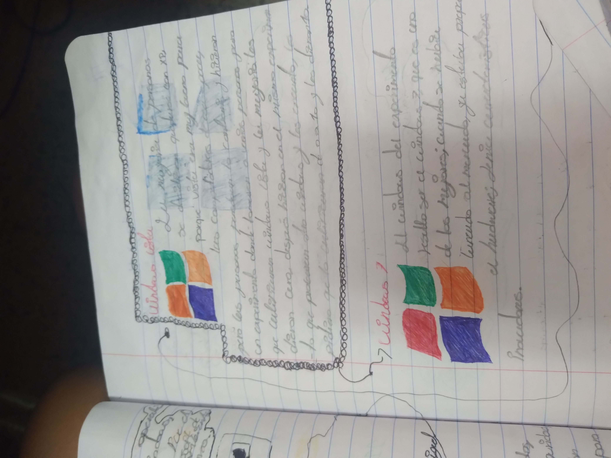
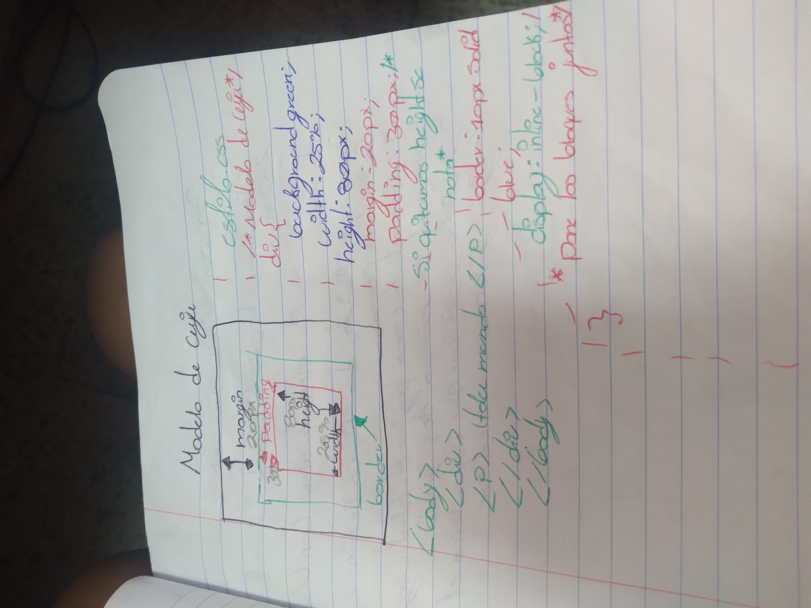

Trabajos de Informatica de Luis y Frida
En este trabajo vemos las formas de poner color, lo habiamos dejado con color la ultima vez, pero se le quito.üò™

Profe no nos dejo abrirlo en el explored, entonces viene con una imagen de lo que era el trabajo, era de modelo de caja. üòî

Aqui vimos cosas sobre la tecnologia. üòú

Nos gusto porque aprendimos a hacer planos de lugares o casas en la computadora. üòâ

Nos gusto porque aprendimos cual es la planeacion de los procesos tecnicos, y como se organizan los procesos tecnicos.üòé
No nos acordamos tanto, pero recordamos que nos gustaban hasta cierto punto los diagramas de flujo porque despues eran muy estresantes. üôÑü•±

este es un mapa mental sobre todos los windows
es el modelo de caja y como ponerlo
Esto es otro mapa mental pero de los directorios de Windows. üòÅ